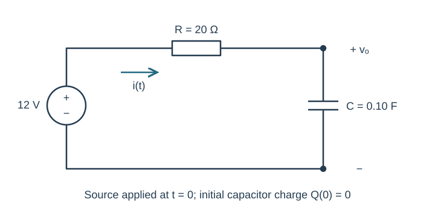

Course practice / Batch 01 / 2026-10-10 PDT
MTH 256
一阶微分方程
First-order differential equations · 验证解、方向场、分离变量、积分因子与建模
Classify and verify
Consider \(y(t)=3e^{-2t}+t\) and the equation \(y^{\prime}+2y=2t+1\).
- State the order, dependent variable, independent variable, and whether the equation is linear.
- Differentiate the proposed function and verify it satisfies the equation for every real t.
- State the initial value y(0). Does the same function satisfy an IVP with y(0) = 4?
中文提示（不含解答）
验证须把导数和函数都代入方程，再单独核对初值。
Read a direction field
For \(y^{\prime}=y(2-y)\), sketch short slope segments at every point where t = 0, 1, 2 and y = −1, 0, 1, 2, 3.
- Compute the five slope values and explain why they repeat across the three t values.
- Identify equilibrium solutions. Describe the direction of motion when y < 0, 0 < y < 2, and y > 2.
- Classify each equilibrium as attracting or repelling. Describe the long-term behavior for y(0) = 1.
中文提示（不含解答）
斜率只依赖 y；相线箭头依据 y′ 的符号，而非 y 的符号。
Separate and solve an IVP
Solve \(y^{\prime}=2ty\), \(y(0)=3\). Show separation, integration, and use of the initial condition. State the interval on which your solution is defined and verify it by differentiation.
Also state the equilibrium solution that could be lost if you divide by y without checking.
中文提示（不含解答）
对 y 积分与对 t 积分放在等号两侧；除以 y 前先考虑 y = 0。
A branch and its interval
Solve \(x\,\frac{dx}{dt}=4t\) with \(x(0)=-3\).
- Find an implicit relation and then the branch satisfying the initial value.
- Give the maximal interval containing t = 0 on which this branch is a differentiable solution.
- Explain why the other square-root sign does not satisfy the IVP.
中文提示（不含解答）
先用初值选择正负支，再检查根号和原方程的定义域。
A constant-coefficient linear IVP
Solve \(y^{\prime}+3y=6\), \(y(0)=5\). State the integrating factor, show the product-derivative step, and find \(\lim_{t\to\infty}y(t)\). Confirm the equilibrium directly from the differential equation.
中文提示（不含解答）
先把方程写成标准形式；积分因子同时乘左右两边。
Variable coefficient, stated domain
Solve \(y^{\prime}-\frac{2}{t}y=t^2\), \(y(1)=4\), on t > 0. Show an integrating factor and check both the equation and initial value. Why should the original IVP not be extended across t = 0 merely because the final formula looks well behaved?
中文提示（不含解答）
解的表达式可能在 0 有值，但原方程的系数在 0 未定义。
A warming sample
A sample starts at 10 °C in a room held at 30 °C. Its temperature after 5 minutes is 18 °C. Assume T′ = k(30 − T) with k > 0.
- Derive T(t), then determine k with units.
- Find the total time from the start until T = 25 °C.
- State the limiting temperature and explain why the model never reaches it at a finite time.
中文提示（不含解答）
加热与冷却都看相对环境的温差；t 统一用分钟。
A well-mixed tank
A tank initially holds 100 L of water containing 3 kg of dissolved salt. Brine containing 0.05 kg/L enters at 2 L/min. Well-mixed liquid leaves at 2 L/min. Assume perfect mixing, constant rates, and no loss by any other route.
- Define S(t), write its IVP, and include units in the inflow and outflow salt rates.
- Solve for S(t) and the concentration C(t).
- Find the salt mass after 20 minutes and the limiting concentration.
中文提示（不含解答）
质量变化率 = 进入 − 流出；流出浓度是 S(t)/100，不是入口浓度。
Charging a capacitor
A series RC circuit has resistance R = 20 Ω, capacitance C = 0.10 F, and a constant 12 V source switched on at t = 0. The capacitor is initially uncharged. Let Q be charge in coulombs and I = dQ/dt in amperes, positive when charging.
- Write and solve the IVP for Q(t), t ≥ 0.
- Find I(t), the time constant, and limiting charge.
- Find the first time the charge reaches 90% of its limiting value. Check Q(0) and I(0⁺).

中文提示（不含解答）
这里是直流暂态微分方程；与 ENGR202 的正弦稳态相量题区分。
Logistic growth and harvesting
A population P(t), measured in fish, obeys \(P^{\prime}=0.20P(1-P/500)\), where t is in years and P(0) = 100.
- Find all nonnegative equilibria and classify them using a sign diagram.
- Without solving explicitly, say whether the initial population increases or decreases and predict its long-term limit.
- A constant harvest H fish/year is added to the model as −H. Find the H that would keep P = 100 exactly at equilibrium.
- For that value of H, find the other nonnegative equilibrium and classify both equilibria. Restrict the phase-line discussion to P ≥ 0.
中文提示（不含解答）
收获项单位与 P′ 一致；“在初值处平衡”不等于该平衡稳定。